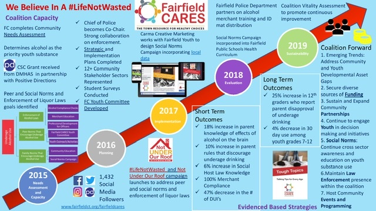

About the
Coalition
Mission Statement
The Fairfield CARES Community Coalition focuses on preventing substance misuse, fostering social and emotional wellness and resilience among youth, young adults, and families.
History
In 2009, the then Fairfield CARES Task Force was established at the request of the First Selectman to address the problem of alcohol [abuse] misuse particularly by youth and young adults. The First Selectman empowered the task force with the responsibility to research, educate and advocate “for ways in which we as a community might foster an effective, responsible and compassionate approach to the abuse of alcohol and other substances”.
From its inception, Fairfield CARES was a collective of individuals representing different sectors of the community coming together with the common purpose of preventing and reducing drug use (see below). Today, the Fairfield CARES Community Coalition continues its initial charge. The Coalition’s purpose is to prevent substance misuse and to promote healthy choices and positive youth and family development.
CARES stands for Community, Awareness, Responsibility, Education, and Services. The Coalition embodies all of these.
On a monthly basis, parents, youth, representatives of schools, law enforcement, businesses, civic organizations, counseling & treatment services, among others convene to plan and implement evidence based strategies to prevent and reduce substance misuse in the Fairfield community. The Coalition applies the Substance Abuse & Mental Health Services Administration’s (SAMHSA) Seven Strategies for Effective Community Change to prevent and reduce substance misuse as shown in the attachment, “How We Do Prevention”. Those strategies are applied to three general spheres: Family, School, and Community. When initiatives for a given objective are implemented simultaneously in at least two or in all three of the spheres, the impact is stronger and behavior change is more likely to occur than if initiatives are implemented in only one area.
Ultimately, it takes all of us working together to ensure that our youth thrive - making healthy choices and feeling good about themselves and their future.

Current Work
Fairfield CARES relies on the Town of Fairfield, the Fairfield School District, and non-profit organizations to serve as its fiscal agent for the grant work that it undertakes. The majority of the coalition’s work is grant funded from the CT Department of Mental Health and Addiction Services (DMHAS). Often federal funding is distributed to states that in turn is distributed to community coalitions or to Local Prevention Councils (LPCs).
The coalition’s current substance misuse prevention goals and/or objectives include:
- Reduce the percentage of middle school and high school youth who drink alcohol in the past month to no more than 20%.
- 88% percent of middle and high school youth perceive underage drinking as harmful.
- Increase the percentage of youth who perceive vaping as harmful.
- Increase parent knowledge of the dangers of vaping.
- Begin work to advocate for banning the sale of flavored tobacco products locally in Fairfield.
- Increase the availability of opioid use disorder prevention materials throughout the community.
Click on the image to see and download a full size pdf version of our brochure:
Check out our 5 year timeline for our CSC grant period (click on image for pdf with hyperlinks):
